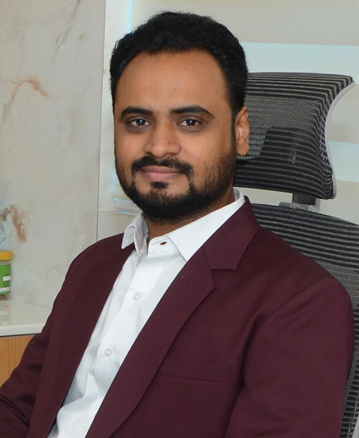

Partner
CA Sachin Dharwal is a highly experienced Chartered Accountant based in Ahmedabad, Gujarat, with a strong specialization in Indirect Taxation, particularly Goods and Services Tax (GST) and Service Tax. With a deep understanding of regulatory frameworks and a proactive professional approach, he has consistently delivered reliable and effective solutions to clients across various industries.
Over the years, CA Sachin Dharwal has built a diverse client base spread across Ahmedabad, Gandhinagar, Jamnagar, Delhi, Pune, Mumbai, and several other cities across India. His dedication to professional excellence, ethical practices, and client satisfaction has earned him long-term trust and recognition in the field of taxation and compliance.
Mr. Dharwal actively contributes to the professional community through his involvement with the Ahmedabad branch of The Institute of Chartered Accountants of India (ICAI). His roles in various sub-committees demonstrate his dedication to the advancement of the accounting profession:
Outside of his professional pursuits, Mr. Dharwal is an avid cricket enthusiast. His passion for the sport has been recognized through multiple awards, a testament to his talent and dedication both on and off the field.
With a client-centric approach and an unwavering commitment to excellence, CA Sachin Dharwal continues to empower businesses with innovative solutions, reliable guidance, and unparalleled professionalism.
Partner
CA Ronak Baser, a native of Vadali, Gujarat, is a highly skilled Chartered Accountant specializing in Corporate Tax and GST (Goods and Services Tax). With a deep understanding of corporate and tax laws, Mr. Baser has established himself as a trusted advisor for businesses across India. Mr. Baser's professional services are trusted by clients across Ahmedabad, Vadali, Jamnagar, Patan, Viramgam, Delhi, and various other cities in India. His commitment to delivering tailored solutions has made him a preferred advisor for businesses of all sizes.
Outside of his professional commitments, Mr. Baser enjoys exploring historic places, reflecting his deep appreciation for culture and heritage. Additionally, his love for music offers him a creative outlet and a source of relaxation.
With an unwavering dedication to client success and a solution-oriented approach, CA Ronak Baser continues to empower businesses by offering expert guidance, ensuring compliance, and fostering growth. His extensive expertise and client-centric focus make him an invaluable partner for any organization.
Partner
CA Jimmy Modi, originally from Patan, Gujarat, is a proficient Chartered Accountant with expertise in both direct and indirect taxation, as well as audit and financial consulting. With a strong foundation in taxation and entity formation, Mr. Modi has been instrumental in providing strategic guidance and compliance support to his clients. Mr. Modi serves clients across Patan, Deesa, Unjha, Ahmedabad, and nearby cities, demonstrating a strong regional presence and a commitment to client success. Mr. Modi is skilled in the formation of various types of entities, assisting clients in establishing businesses with ease while ensuring compliance with applicable laws and regulations.
A cricketer, Mr. Modi regularly participates in the sport, showcasing his team spirit and passion for the game. Additionally, he is a technocrat, with an in-depth understanding of information technology, which he integrates into his professional practice to deliver innovative and efficient solutions for his clients.
CA Jimmy Modi is committed to empowering clients with his extensive expertise in taxation, audit, and financial consulting. His dynamic approach, combined with his technical acumen and client-centric philosophy, makes him a trusted advisor for businesses and organizations across sectors.

Partner
Harsh Kharadi, a seasoned professional based in Himatnagar, Gujarat, brings a wealth of experience in the fields of Audit and Corporate Tax. With a career spanning multiple geographies, he predominantly caters to clients located in Ahmedabad, Surat, Delhi, Himatnagar and various other cities throughout India. His expertise lies in delivering tailored solutions across a diverse portfolio of clients, ranging from corporations to trusts and co-operative societies.
Beyond his professional endeavors, Harsh is a passionate musician who finds solace in playing musical instruments. An avid traveler, he embraces every opportunity to explore new places and cultures, enriching his perspective and creativity.
CA Harsh Kharadi is dedicated to delivering exceptional value to his clients by leveraging his expertise and fostering long-term professional relationships built on trust, integrity, and excellence. His multifaceted approach ensures his clients receive innovative solutions tailored to their unique needs.